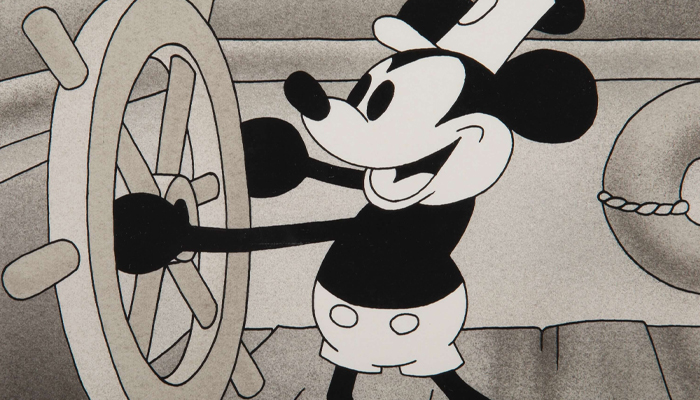

História do Mickey Mouse
A história do Mickey Mouse começa em 1927, quando Walt Disney e Ub Iwerks criaram o personagem de desenho animado para a Universal Pictures: Oswald the Lucky Rabbit (Oswald o Coelho Sortudo). O personagem estrelou vários curtas-metragens de animação lançados nos cinemas de 1927 a 1938.

Walt Disney criador de Mickey Mouse:
Disney
A companhia foi fundada em 1923 pelos irmãos Walt Disney e Roy Oliver Disney, tendo como especialidade as animações, mas ao longo dos anos a marca se expandiu para múltiplas áreas do entretenimento. A companhia começou a ganhar fôlego com a criação daquele que seria o maior símbolo da Disney: o mascote Mickey Mouse.
Inauguração
Foi inaugurado 01/10/1971, Lake Buena Vista,Flórida, EUA Há 94 anos o sonho de Walt Disney se tornou realidade e atende pelo nome de Mickey Mouse. No dia 18 de novembro de 1928, o mundo ganhou um toque a mais de magia. Trata-se da data em que O Vapor Willie (Steamboat Willie), primeira aparição do Mickey em uma animação, estreou. Ou seja, é o aniversário do Mickey!
Parques
O Mickey faz partes de alguns paruqes da Disney, sendo eles:
Magic Kigndom.
Disney's Hollywood Studios.
Disney's Animal Kingdom.